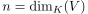
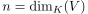
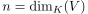
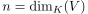
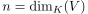

Sei ein K-Vektorraum und ein Vektorraumendomorphismus, so besitzt maximal  Eigenwerte
folgt aus der lineare Unabhängigkeit von Eigenvektoren für verschiedene Eigenwerte und der maximal linear unabhängigen Teilmenge
Author: Anton Zakrewski
Email: anton.zakrewski@campus.lmu.de
 ein K-Vektorraum und
ein K-Vektorraum und  ein Vektorraumendomorphismus, so besitzt
ein Vektorraumendomorphismus, so besitzt  maximal  Eigenwerte
ein K-Vektorraum und ein Vektorraumendomorphismus, so besitzt maximal  Eigenwerte
maximal  Eigenwerte
ein K-Vektorraum und ein Vektorraumendomorphismus, so besitzt maximal  Eigenwerte